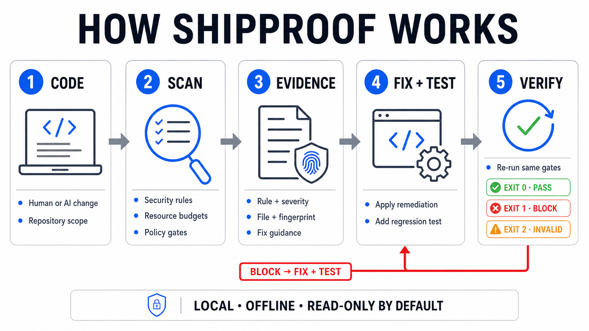
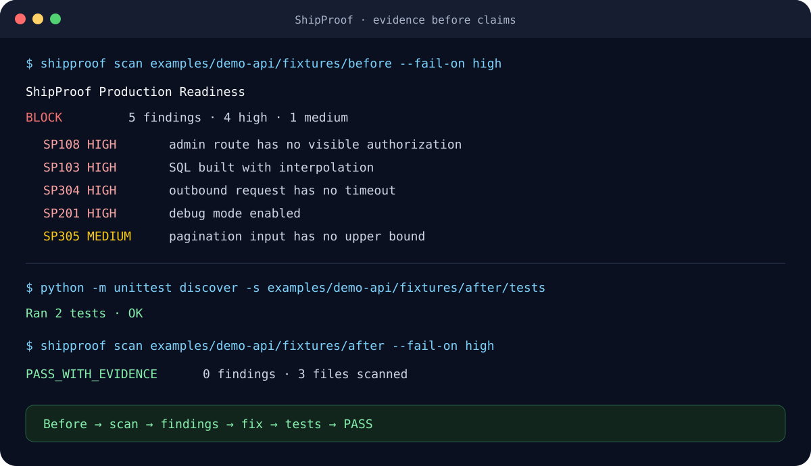

CLI
รัน gate แบบอ่านอย่างเดียวจาก root ของ repository ให้ feedback อยู่ใกล้โค้ด
shipproof check .Production evidence gate / v0.10.0
ShipProof ตรวจการเปลี่ยนแปลงที่พัฒนาด้วย AI ในด้านความปลอดภัย ความถูกต้อง สเกล ประสิทธิภาพ และความเสี่ยงก่อน release ทำงานในเครื่อง ให้ผลลัพธ์แบบ deterministic และมีหลักฐานที่ทีมตรวจสอบได้
$ shipproof check . --format terminal > FAIL scope: changed-since HEAD (18 ไฟล์) > security 2 high · 4 medium · 2 low > correctness 1 high · 1 medium · 1 low > scale 1 high · 1 medium · budget เกิน > release 1 high · artifact ผ่าน > > [HIGH] SP105 JWT signature verification disabled > src/auth/jwt.ts:61 · บล็อก 3 รายการ > [HIGH] SP109 SSRF to internal network or metadata > src/routes/proxy.ts:44 · แนบคำแนะนำแล้ว > [HIGH] SP110 path traversal in file path > src/storage/download.ts:32 · บล็อก 1 รายการ > [HIGH] SP501 unmetered AI/LLM API route > src/api/generate.ts:17 · เกินงบประมาณ > [MED] SP204 sensitive data or credential logging > src/auth/login.ts:88 · แนบขอบเขต false positive > [MED] SP406 Express error sent to client > src/api/errors.ts:27 · อาจเผย stack trace > > findings: 14 · evidence: sp-evidence-7d2c > exit code: 1
{
"status": "fail_with_findings",
"scope": "changed-since HEAD",
"blocking": 3,
"findings": [
{ "rule_id": "SP105", "severity": "high" },
{ "rule_id": "SP109", "severity": "high" },
{ "rule_id": "SP204", "severity": "medium" }
],
"evidence_id": "sp-evidence-7d2c",
"exit_code": 1
}
// SARIF 2.1.0 excerpt { "version": "2.1.0", "runs": [{ "tool": "ShipProof", "results": [ { "ruleId": "SP105", "level": "error" }, { "ruleId": "SP109", "level": "error" }, { "ruleId": "SP204", "level": "warning" } ] }] }
01Local-firstซอร์สโค้ดอยู่ในเครื่องของคุณ
02Deterministicอินพุตเดิมได้ผลลัพธ์ที่ตรวจสอบได้
03Automatableเทอร์มินัล, Action, JSON, SARIF, MCP
Interactive sample
ลองรัน fixture เพื่อดูรูปแบบหลักฐานเดียวกับที่ทีมใช้ใน CI
evidence://sp-demo-7d2c14 findings · exit 1ตัวอย่างเท่านั้น · ไม่มีการอัปโหลดหรือสแกน repository
วงจรการทำงาน
gate ขนาดเล็กที่ทำซ้ำได้และเข้ากับ workflow เดิมของทีม เริ่มจากเทอร์มินัล แล้วใช้ contract เดิมใน CI เมื่อพร้อม
ระบุไฟล์และหลักฐานที่เปลี่ยนแปลงจริง
ตรวจความปลอดภัย ความถูกต้อง สเกล ประสิทธิภาพ และ release
อ่านวิธีแก้และขอบเขต false positive คู่กับแต่ละ finding
เก็บผลลัพธ์เป็น terminal, JSON, SARIF หรือหลักฐานจาก CI

หลักฐาน ไม่ใช่ความรู้สึก
ทุกผลลัพธ์มี rule ID ที่คงที่ ระดับความรุนแรง mapping กับ control วิธีแก้ และขอบเขตที่อาจเป็น false positive นี่คือสิ่งที่ทำให้ gate ตรวจสอบได้ ไม่ใช่กล่องดำ
อ่าน command reference
contract เดียว หลายพื้นผิว
รัน gate แบบอ่านอย่างเดียวจาก root ของ repository ให้ feedback อยู่ใกล้โค้ด
shipproof check .ใช้ exit code และ evidence contract เดิมใน pull request และ release job
uses: kingggg5/shipproof@v0.10.0ส่งออกผลลัพธ์แบบมีโครงสร้างสำหรับ annotation, archive และเครื่องมือ review
--format sarifเชื่อม gate เข้ากับ AI workflow โดยไม่ทำให้ตัว scanner ต้องพึ่งโมเดล
shipproof mcpขอบเขตของคำกล่าวอ้าง
“อินพุตนี้ให้ finding แบบ deterministic เหล่านี้ ภายใต้ policy และ scope นี้”
“โค้ดนี้ผ่านการรับรอง ป้องกันการเจาะได้ หรือไม่มี defect ใด ๆ”
ใช้หลักฐานร่วมกับ review, tests, threat model และบริบทของระบบ
เริ่มด้วยคำสั่งเดียว